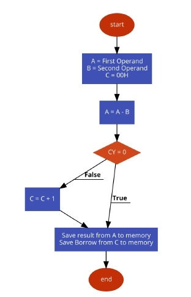

Name : Rishabh Sarswa Roll no : 19UELE8030 Year : 2nd SEM : 4th Session : 2019-20 INDEX Experiment : 1H Experiment : 2H Experiment : 3H Experiment : 4H Experiment : 5H Experiment : 6H Experiment : 7H Experiment : 8H
################################################################################################## ################################################################################################## INDEX EXP : 1 ################################################################################################## ##################################################################################################
Name : Rishabh Sarswa Rollno : 19UELE8030 Experiment : 1 Topic :Instruction Set of Intel 8085 Microprocessor An Instruction is a command given to the computer to perform a specified operation on given data. The instruction set of a microprocessor is the collection of the instructions that the microprocessor is designed to execute. The instructions described here are of Intel 8085. These instructions are of Intel Corporation. They cannot be used by other microprocessor manufactures. The programmer can write a program in assembly language using these instructions. These instructions have been classified into the following groups: 1) Data Transfer Group 2) Arithmetic Group 3) Logical Group 4) Branch Control Group 5) I/O and Machine Control Group Data Transfer Group Instructions, which are used to transfer data from one register to another register, from memory to register or register to memory, come under this group. Examples are: MOV, MVI, LXI, LDA, STA etc. When an instruction of data t ransfer group is executed, data is transferred from the source to the destination without altering the contents of the source. For example, when MOV A, B is executed the content of the register B is copied into the register A, and the content of register B remains unaltered. Similarly, when LDA 2500 is executed the content of the memory location 2500 is loaded into the accumulator. But the content of the memory location 2500 remains unaltered. Arithmetic Group The instructions of this group perform arithmetic operations such as addition, subtraction; increment or decrement of the content of a register or memory. Examples are: ADD, SUB, INR, DAD etc. Logical Group The Instructions under this group perform logical operation such as AND, OR, compare, rotate etc. Examples are: ANA, XRA, ORA, CMP, and RAL etc. Branch Control Group This group includes the instructions for conditional and unconditional jump, subroutine call and return, and restart. Examples are: JMP, JC, JZ, CALL, CZ, RST etc. I/O and Machine Control Group This group includes the instructions for input/output ports, stack and machine control. Examples are: IN, OUT, PUSH, POP, and HLT etc. ---------- Intel 8085 Instructions ---------- Data Transfer Group MOV r1, r2 (Move Data; Move the content of the one register to another). [r1] <-- [r2] MOV r, m (Move the content of memory register). r <-- [M] MOV M, r. (Move the content of register to memory). M <-- [r] MVI r, data. (Move immediate data to register). [r] <-- data. MVI M, data. (Move immediate data to memory). M <-- data. LXI rp, data 16. (Load register pair immediate). [rp] <-- data 16 bits, [rh] <-- 8 LSBs of data. LDA addr. (Load Accumulator direct). [A] <-- [addr]. STA addr. (Store accumulator direct). [addr] <-- [A]. LHLD addr. (Load H-L pair direct). [L] <-- [addr], [H] <-- [addr+1]. SHLD addr. (Store H-L pair direct) [addr] <-- [L], [addr+1] <-- [H]. LDAX rp. (LOAD accumulator indirect) [A] <-- [[rp]] STAX rp. (Store accumulator indirect) [[rp]] <-- [A]. XCHG. (Exchange the contents of H-L with D-E pair) [H-L] <--> [D-E]. Arithmetic Group ADD r. (Add register to accumulator) [A] <-- [A] + [r]. ADD M. (Add memory to accumulator) [A] <-- [A] + [[H-L]]. ADC r. (Add register with carry to accumulator). [A] <-- [A] + [r] + [CS]. ADC M. (Add memory with carry to accumulator) [A] <-- [A] + [[H-L]] [CS]. ADI data (Add immediate data to accumulator) [A] <-- [A] + data. ACI data (Add with carry immediate data to accumulator). [A] <-- [A] + data + [CS]. DAD rp. (Add register paid to H-L pair). [H-L] <-- [H-L] + [rp]. SUB r. (Subtract register from accumulator). [A] <-- [A] – [r]. SUB M. (Subtract memory from accumulator). [A] <-- [A] – [[H-L]]. SBB r. (Subtract register from accumulator with borrow). [A] <-- [A] – [r] – [CS]. SBB M. (Subtract memory from accumulator with borrow). [A] <-- [A] – [[H-L]] – [CS]. SUI data. (Subtract immediate data from accumulator) [A] <-- [A] – data. SBI data. (Subtract immediate data from accumulator with borrow). [A] <-- [A] – data – [CS]. INR r (Increment register content) [r] <-- [r] +1. INR M. (Increment memory content) [[H-L]] <-- [[H-L]] + 1. DCR r. (Decrement register content). [r] <-- [r] – 1. DCR M. (Decrement memory content) [[H-L]] <-- [[H-L]] – 1. INX rp. (Increment register pair) [rp] <-- [rp] – 1. DCX rp (Decrement register pair) [rp] <-- [rp] -1. DAA (Decimal adjust accumulator) . The instruction DAA is used in the program after ADD, ADI, ACI, ADC, etc instructions. After the execution of ADD, ADC, etc instructions the result is in hexadecimal and it is placed in the accumulator. The DAA instruction operates on this result and gives the final result in the decimal system. It uses carry and auxiliary carry for decimal adjustment. 6 is added to 4 LSBs of the content of the accumulator if their value lies in between A and F or the AC flag is set to 1. Similarly, 6 is also added to 4 MSBs of the content of the accumulator if their value lies in between A and F or the CS flag is set to 1. All status flags are affected. When DAA is used data should be in decimal numbers. Logical Group ANA r. (AND register with accumulator) [A] <-- [A] ^ [r]. ANA M. (AND memory with accumulator). [A] <-- [A] ^ [[H-L]]. ANI data. (AND immediate data with accumulator) [A] <-- [A] ^ data. ORA r. (OR register with accumulator) [A] <-- [A] v [r]. ORA M. (OR memory with accumulator) [A] <-- [A] v [[H-L]] ORI data. (OR immediate data with accumulator) [A] <-- [A] v data. XRA r. (EXCLUSIVE – OR register with accumulator) [A] <-- [A] v [r] XRA M. (EXCLUSIVE-OR memory with accumulator) [A] <-- [A] v [[H-L]] XRI data. (EXCLUSIVE-OR immediate data with accumulator) [A] <-- [A] CMA. (Complement the accumulator) [A] <-- [A] CMC. (Complement the carry status) [CS] <-- [CS] STC. (Set carry status) [CS] <-- 1. CMP r. (Compare register with accumulator) [A] – [r] CMP M. (Compare memory with accumulator) [A] – [[H-L]] CPI data. (Compare immediate data with accumulator) [A] – data. The 2nd byte of the instruction is data, and it is subtracted from the content of the accumulator. The status flags are set according to the result of subtraction. But the result is discarded. The content of the accumulator remains unchanged. RLC (Rotate accumulator left) [An+1] <-- [An], [A0] <-- [A7],[CS] <-- [A7]. The content of the accumulator is rotated left by one bit. The seventh bit of the accumulator is moved to carry bit as well as to the zero bit of the accumulator. Only CS flag is affected. RRC. (Rotate accumulator right) [A7] <-- [A0], [CS] <-- [A0], [An] <-- [An+1]. The content of the accumulator is rotated right by one bit. The zero bit of the accumulator is moved to the seventh bit as well as to carry bit. Only CS flag is affected. RAL. (Rotate accumulator left through carry) [An+1] <-- [An], [CS] <-- [A7], [A0] <-- [CS]. RAR. (Rotate accumulator right through carry) [An] <-- [An+1], [CS] <-- [A0], [A7] <-- [CS] Branch Group JMP addr (label). (Unconditional jump: jump to the instruction specified by the address). [PC] <-- Label. Conditional Jump addr (label): After the execution of the conditional jump instruction the program jumps to the instruction specified by the address (label) if the specified condition is fulfilled. The program proceeds further in the normal sequence if the specified condition is not fulfilled. If the condition is true and program jumps to the specified label, the execution of a conditional jump takes 3 machine cycles: 10 states. If condition is not true, only 2 machine cycles; 7 states are required for the execution of the instruction. JZ addr (label). (Jump if the result is zero) JNZ addr (label) (Jump if the result is not zero) JC addr (label). (Jump if there is a carry) JNC addr (label). (Jump if there is no carry) JP addr (label). (Jump if the result is plus) JM addr (label). (Jump if the result is minus) JPE addr (label) (Jump if even parity) JPO addr (label) (Jump if odd parity) CALL addr (label) (Unconditional CALL: call the subroutine identified by the operand) CALL instruction is used to call a subroutine. Before the control is transferred to the subroutine, the address of the next instruction of the main program is saved in the stack. The content of the stack pointer is decremented by two to indicate the new stack top. Then the program jumps to subroutine starting at address specified by the label. RET (Return from subroutine) RST n (Restart) Restart is a one-word CALL instruction. The content of the program counter is saved in the stack. The program jumps to the instruction starting at restart location. Stack, I/O and Machine Control Group IN port-address. (Input to accumulator from I/O port) [A] <-- [Port] OUT port-address (Output from accumulator to I/O port) [Port] <-- [A] PUSH rp (Push the content of register pair to stack) PUSH PSW (PUSH Processor Status Word) POP rp (Pop the content of register pair, which was saved, from the stack) POP PSW (Pop Processor Status Word) HLT (Halt) XTHL (Exchange stack-top with H-L) SPHL (Move the contents of H-L pair to stack pointer) EI (Enable Interrupts) DI (Disable Interrupts) SIM (Set Interrupt Masks) RIM (Read Interrupt Masks) NOP (No Operation) ------- end of file -------
################################################################################################## ################################################################################################## INDEX EXP : 2 ################################################################################################## ##################################################################################################
Name : Rishabh Sarswa Rollno : 19UELE8030 Experiment : 2 Aim : Store given 16 bit number at memory location 1000H Software Use : GNUSim8085 Program : -------- program in asm ------ LXI B,0703H ;Load 16bit value LXI H,1000H ;Load operand address MOV M,B ;Set first 8bit INX H ;Increment address MOV M,C ;Set last 8bit HLT ;Stop Program ------- end program -------
################################################################################################## ################################################################################################## INDEX EXP : 3 ################################################################################################## ##################################################################################################
Name : Rishabh Sarswa Rollno : 19UELE8030 Experiment : 3 Aim : Exchange Contents of Memory locations 1000H and 1001H Software Use : GNUSim8085 Program : -------- program in asm ------ LXI B,1000H ;Load first operand address LXI D,1001H ;Load second operand address LDAX B ;Load first value MOV H,A LDAX D ;Load second value STAX B ;Store second value MOV A,H STAX D ;Store second value HLT ;Stop Program ------- end program -------
################################################################################################## ################################################################################################## INDEX EXP : 4 ################################################################################################## ##################################################################################################
Name : Rishabh Sarswa Rollno : 19UELE8030 Experiment : 4 Aim : ADD the content of memory location 1000H and 1001H place result in memory location 1002H carry in 1003H Software Use : GNUSim8085 Program : ------ Program Table ------ Address HEX Codes Labels Mnemonics Comments F000 0E, 00 MVI C,00H Clear C register F002 21, 00, 10 LXI H,1000H Load initial address to get operand F005 7E MOV A,M Load Acc with memory element F006 23 INX H Point to next location F007 46 MOV B,M Load B with second operand F008 90 ADD B ADD A and B F009 D2, 0D, F0 JNC STORE When CY = 0, go to STORE F00C 0C INR C Increase C by 1 F00D 21, 20, 10 STORE LXI H,1002H Load the destination address F010 77 MOV M,A Store the result F011 23 INX H Point to next location F012 71 MOV M,C Store the borrow F013 76 HLT Terminate the program -------- program in asm ------ MVI C,00H ;Clear C register LXI H,1000H ;Load initial address to get operand MOV A,M ;Load Acc with memory element INX H ;Point to next location MOV B,M ;Load B with second operand ADD B ;ADD A and B JNC STORE ;When CY = 0, go to STORE INR C ;Increase C by 1 STORE:LXI H,1002H ;Load the destination address MOV M,A ;Store the result INX H ;Point to next location MOV M,C ;Store the borrow HLT ;Terminate the program ------- end program -------
################################################################################################## ################################################################################################## INDEX EXP : 5 ################################################################################################## ##################################################################################################
Name : Rishabh Sarswa Rollno : 19UELE8030 Experiment : 5 Aim : Subtract the content of memory location 1000H and 1001H place result in memory location 1002H carry in 1003H Software Use : GNUSim8085 Program : ------ Program Table ------ Address HEX Codes Labels Mnemonics Comments F000 0E, 00 MVI C,00H Clear C register F002 21, 00, 10 LXI H,1000H Load initial address to get operand F005 7E MOV A,M Load Acc with memory element F006 23 INX H Point to next location F007 46 MOV B,M Load B with second operand F008 90 SUB B Subtract B from A F009 D2, 0D, F0 JNC STORE When CY = 0, go to STORE F00C 0C INR C Increase C by 1 F00D 21, 20, 10 STORE LXI H,1002H Load the destination address F010 77 MOV M,A Store the result F011 23 INX H Point to next location F012 71 MOV M,C Store the borrow F013 76 HLT Terminate the program -------- program in asm ------ MVI C,00H ;Clear C register LXI H,1000H ;Load initial address to get operand MOV A,M ;Load Acc with memory element INX H ;Point to next location MOV B,M ;Load B with second operand SUB B ;Subtract B from A JNC STORE ;When CY = 0, go to STORE INR C ;Increase C by 1 STORE: LXI H,1002H ;Load the destination address MOV M,A ;Store the result INX H ;Point to next location MOV M,C ;Store the borrow HLT ;Terminate the program ------- end program ------- 

################################################################################################## ################################################################################################## INDEX EXP : 6 ################################################################################################## ##################################################################################################
Name : Rishabh Sarswa Rollno : 19UELE8030 Experiment : 6 Aim : Multiply the contents of memory location 1000H and 1001H place the result in memory location 1002H and 1003H carry Software Use : GNUSim8085 Program : ------ Program Table ------ Address HEX Codes Labels Mnemonics Comments F000 21, 00, 10 LXI H,1000H Load first operand address F003 46 MOV B, M Store first operand to B F004 23 INX H Increase HL pair F005 AF XRA A Clear accumulator F006 4F MOV C, A Store 00H at register C F007 86 LOOP ADD M Add memory element with Acc F008 D2, 0C, F0 JNC SKIP When Carry flag is 0, skip next task F00B 0C INR C Increase C when carry is 1 F00C 05 SKIP DCR B Decrease B register F00D C2, 07, F0 JNZ LOOP Jump to loop when Z flag is not 1 F010 21, 20, 10 LXI H,1002H Load Destination address F013 71 MOV M, C Store C register content into memory F014 23 INX H Increase HL Pair F015 77 MOV M, A Store Acc content to memory F016 76 HLT Terminate the program -------- program in asm ------ LXI H,1000H ;Load first operand address MOV B, M ;Store first operand to B INX H ;Increase HL pair XRA A ;Clear accumulator MOV C, A ;Store 00H at register C LOOP: ADD M ;Add memory element with Acc JNC SKIP ;When Carry flag is 0, skip next task INR C ;Increase C when carry is 1 SKIP: DCR B ;Decrease B register JNZ LOOP ;Jump to loop when Z flag is not 1 LXI H,1002H ;Load Destination address MOV M, C ;Store C register content into memory INX H ;Increase HL Pair MOV M, A ;Store Acc content to memory HLT ;Terminate the program ------- end program -------
################################################################################################## ################################################################################################## INDEX EXP : 7 ################################################################################################## ##################################################################################################
Name : Rishabh Sarswa Rollno : 19UELE8030 Experiment : 7 Aim : Divide the contents of memory locations 1000H and 1001H and place the quotient in memory location 1002H and remainder on 1003H. Software Use : GNUSim8085 Program : ------ Program Table ------ Location Hex code Labels + Mnemonics Explanation F000 0G, 00 MVI C , 00H Imm. More data to C F004 21, 00, 10 LXI H , 1000H Load data in resister pair F005 7E MOV A , M More data from memory to A F006 23 INX H Increment HL pair F007 46 MOV B , M Move data from memory to B F008 0C Loop : INR C Increment C F009 90 SUB B Sub. B data from A F00A D2, 08, F0 JNC Loop Jump if no carry F00D 80 ADD B Add data of B and accumulator F00E 23 LX1 H , 1002H Increment HL pointer by 1 F011 71 MOV M,C Move data from C to memory F012 23 INX H Increment HL pair resister F013 77 MOV M,A Move data from Accumulator F014 76 HLT End Program -------- program in asm ------ MVI C , 00H ;Imm. More data to C LXI H , 1000H ;Load data in resister pair MOV A,M ;More data from memory to A INX H ;Increment HL pair MOV B,M ;Move data from memory to B Loop: INR C ;Increment C SUB B ;Sub. B data from A JNC Loop ;Jump if no carry ADD B ;Add data of B and accumulator LXI H , 1002H ;Increment HL pointer by 1 MOV M,C ;Move data from C to memory INX H ;Increment HL pair resister MOV M,A ;Move data from Accumulator HLT ;End Program ------- end program -------
################################################################################################## ################################################################################################## INDEX EXP : 8 ################################################################################################## ##################################################################################################
Name : Rishabh Sarswa Rollno : 19UELE8030 Experiment : 8 Aim : Add a 16 bit number stared in memory location 1000H AND 1001H to another 16 bit number stored in memory location 1002H and 1003H. Store the result in memory location 1004H and 1005H and carry (if any) in memory location 1006H Software Use : GNUSim8085 Program : -------- program in asm ------ MVI C,00 ;Load 00 into register C LHLD 1000H ;Load HL register pair with 16 bit data from memory location 1000H and 1001H XCHG ;Exchange the content of register pair DE and HL LHLD 1002H ;Load HL register pair with 2nd 16 bit no. from memory location 1002H and 1003H DAD D ;Add register pair DE with HL JNC RER ;Jump on no carry INR C ;Increment the register C by 1 RER: SHLD 1004H ;Store HL register pair directly to memory location 1004H and 1005H MOV A,C ;Move from register C to accumulator STA 1006H ;Store acc. Direct into memory location 1006H (carry) HLT ;End Program ------- end program -------
################################################################################################## ################################################################################################## INDEX THE END ################################################################################################## ##################################################################################################